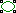
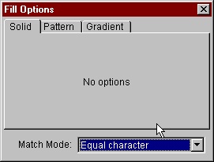
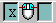
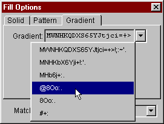
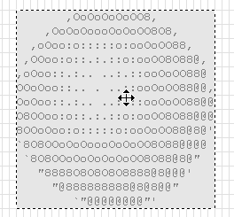
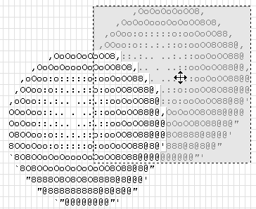

This Tutorial will give you some idea about how to use JavE to create and edit Ascii Art.
Just go through the steps and you will see how easy it is to create this image:
,OoOoOoOoOO8,
,OoOoOoooOoOoOO8O8,
,oOoo:o:::::o:ooOoOO88,
,OoOoOoOoOO8,oo:o::.:.::o:ooOO8O88@,
,OoOoOoooOoOoOO8O8,.:.. ..:.::ooOoOO88@
,oOoo:o:::::o:ooOoOO88,. . ..::ooOoOO88@@,
,OOoo:o::.:.::o:ooOO8O88@, ..:.::ooOoOO88@@
,oOoo::.:.. ..:.::ooOoOO88@:.::o:ooOO8O88@@@
OOoOoo::.. . ..::ooOoOO88@@,::o:ooOoOO88@8@'
OoOoo::.:.. ..:.::ooOoOO88@@oOoOoOO8O88@@@@
O8OOoo:o::.:.::o:ooOO8O88@@@OoOoOO8O88@8@"
8OOoOoo:o:::::o:ooOoOO88@8@'O8O8888@8@@@'
`8O8OOoOoOoooOoOoOO8O88@@@@88888@8@8@@"
`8O8OOoOoOoOoOoOO8O88@8@"@@@@@@@@"'
"8888O8O8O8O8888@8@@@'
"@888888888@8@8@@"
`"@@@@@@@@"'
|
On the left side there is a toolbar with the most important tools for editing the document.
Choose the tool "Ellipse Generic" by clicking on its icon: .
When you release the mouse button, the circle will be pasted into the document (hitting the escape key will cancel the operation).
Remember that you can always hit the undo button (or choose undo from the edit menu) to undo the last operation. You can undo/redo almost unlimited steps of editing.
However, your document should now look somewhat like this:
_,.-----.._
,-' '-.
,- '-
/ `.
/ \
/ \
| |
| |
'. |
\ ,'
`. /
-. ,-
-.._ _,-'
'-----''
|
_,.-----.._
,-'XXXXXXXXXXX'-.
,-XXXXXXXXXXXXXXXXX'-
/XXXXXXXXXXXXXXXXXXXXX`.
/XXXXXXXXXXXXXXXXXXXXXXXX\
/XXXXXXXXXXXXXXXXXXXXXXXXX\
|XXXXXXXXXXXXXXXXXXXXXXXXXX|
|XXXXXXXXXXXXXXXXXXXXXXXXXX|
'.XXXXXXXXXXXXXXXXXXXXXXXX|
\XXXXXXXXXXXXXXXXXXXXXXX,'
`.XXXXXXXXXXXXXXXXXXXX/
-.XXXXXXXXXXXXXXXX,-
-.._XXXXXXXX_,-'
'-----''
|

Now choose "Any character" and click the mouse inside the circle again.
The result should look like that:
XXXXXXXXXXX
XXXXXXXXXXXXXXXXX
XXXXXXXXXXXXXXXXXXXXX
XXXXXXXXXXXXXXXXXXXXXXXX
XXXXXXXXXXXXXXXXXXXXXXXXXX
XXXXXXXXXXXXXXXXXXXXXXXXXXX
XXXXXXXXXXXXXXXXXXXXXXXXXXXX
XXXXXXXXXXXXXXXXXXXXXXXXXXXX
XXXXXXXXXXXXXXXXXXXXXXXXXXX
XXXXXXXXXXXXXXXXXXXXXXXXXX
XXXXXXXXXXXXXXXXXXXXXXX
XXXXXXXXXXXXXXXXXXXX
XXXXXXXXXXXXXXXX
XXXXXXXX
|
By the way: The character that is being used for solid filling can be adjusted at the bottom of the editor. You can asign different characters for the left and right mouse button: 
,XXXXXXXXXXX,
,XXXXXXXXXXXXXXXXX,
,XXXXXXXXXXXXXXXXXXXXX,
,XXXXXXXXXXXXXXXXXXXXXXXX,
,XXXXXXXXXXXXXXXXXXXXXXXXXX
XXXXXXXXXXXXXXXXXXXXXXXXXXX,
XXXXXXXXXXXXXXXXXXXXXXXXXXXX
XXXXXXXXXXXXXXXXXXXXXXXXXXXX
XXXXXXXXXXXXXXXXXXXXXXXXXXX'
`XXXXXXXXXXXXXXXXXXXXXXXXXX
`XXXXXXXXXXXXXXXXXXXXXXX"
"XXXXXXXXXXXXXXXXXXXX'
"XXXXXXXXXXXXXXXX"
`"XXXXXXXX"'
|
@8Oo:. ". You can choos a predefined
gradient or create your own:

For the match mode switch back to "Equal character", because we only want to apply shading to the Xs, but not to the characters for the antialiasing.
There are three modes available for shading. The default is "Linear" and would fill the area in a direction you can choose by clicking and dragging the mouse cursor. You can try that, but for a round shape like a ball it is a good idea to choose "Sunburst" instead.
Now click into the circle. The result should look like this:
,:o:o:o:o::.,
,:ooooooooo:o::.:.,
,ooOoOOOOOOOoOoo:o::..,
,ooOoOO8O8O8OOoOoo::.:.. ,
,ooOO8O88@8@88O8OOoo::.:..
::ooOO8O88@88O8OOoo::.:.. ,
:ooOO8O88@8@88O8OOoo::.:..
::ooOoOO8O8O8OOoOoo::.:..
:o:ooOoOOOOOOOoOoo:o::.. . '
`.::o:ooooooooo:o::.:..
`.::o:o:o:o:o:o::.:.. . "
"..:.:.:.:.:.... . '
".:.:.:.:.... . "
`". . "'
|
The gradient fill is darkest at the position where you clicked the mouse. If you don't like the result remember that you can always undo.
Alternatively you can click the right mouse button instead. This will cause the gradient
being reverted from "@8Oo:. " to " .:oO8@" for example:
,OoOoOoOoOO8,
,OoOoOoooOoOoOO8O8,
,oOoo:o:::::o:ooOoOO88,
,OOoo:o::.:.::o:ooOO8O88@,
,oOoo::.:.. ..:.::ooOoOO88@
OOoOoo::.. . ..::ooOoOO88@@,
OoOoo::.:.. ..:.::ooOoOO88@@
O8OOoo:o::.:.::o:ooOO8O88@@@
8OOoOoo:o:::::o:ooOoOO88@8@'
`8O8OOoOoOoooOoOoOO8O88@@@@
`8O8OOoOoOoOoOoOO8O88@8@"
"8888O8O8O8O8888@8@@@'
"@888888888@8@8@@"
`"@@@@@@@@"'
|

To duplicate the ball
you first have to choose copy - eiter by clicking on the button in the top bar, choosing
the right option from the edit menu or by hitting Ctrl-C. You have now placed a copy of the
selection in the system clipboard.
Now you have to paste the copy from the clipboard into the current document. Do that by either
hitting Ctrl-V or choosing 'paste' in the edit menu or the top bar.
Now you have a new selection with a copy of the ball floating over the document. In the options dialog you can choose four different layers that will influence the behavior of the selection to the content of the current document. As we want to place a copy of the ball behind the one that already exists, choose "Background" as layer. Moving around the selection you can see that it is placed behind the other ball:

The selection tool tries to simulate some kind of three dimensional impression by using some tricks. Sometimes it is a good idea to switch that off, because so one can better see what the result will look like: Try deactivating the checkbox "3d View".
Now we are almost finished. It is most likely that your document is greater than the image of the balls and you will want to remove the white borders. You can do so by choosing "crop" from the edit menu (or by hitting the shortcut Ctrl-R).
The result should look like this:
,OoOoOoOoOO8,
,OoOoOoooOoOoOO8O8,
,oOoo:o:::::o:ooOoOO88,
,OoOoOoOoOO8,oo:o::.:.::o:ooOO8O88@,
,OoOoOoooOoOoOO8O8,.:.. ..:.::ooOoOO88@
,oOoo:o:::::o:ooOoOO88,. . ..::ooOoOO88@@,
,OOoo:o::.:.::o:ooOO8O88@, ..:.::ooOoOO88@@
,oOoo::.:.. ..:.::ooOoOO88@:.::o:ooOO8O88@@@
OOoOoo::.. . ..::ooOoOO88@@,::o:ooOoOO88@8@'
OoOoo::.:.. ..:.::ooOoOO88@@oOoOoOO8O88@@@@
O8OOoo:o::.:.::o:ooOO8O88@@@OoOoOO8O88@8@"
8OOoOoo:o:::::o:ooOoOO88@8@'O8O8888@8@@@'
`8O8OOoOoOoooOoOoOO8O88@@@@88888@8@8@@"
`8O8OOoOoOoOoOoOO8O88@8@"@@@@@@@@"'
"8888O8O8O8O8888@8@@@'
"@888888888@8@8@@"
`"@@@@@@@@"'
|
Now what about having a break and playing Asc-Tris? Choose Asc-Tris from the Special menu.
Have fun.